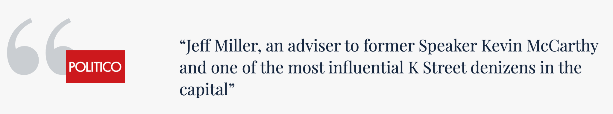
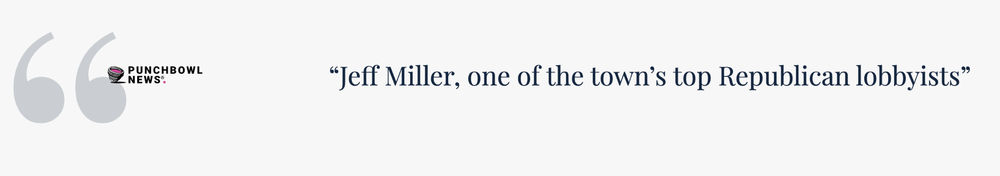

What does Miller Strategies do?
Miller Strategies helps companies and organizations navigate federal advocacy, legislative strategy, regulatory risk, policy intelligence, coalition building, and Washington decision-making.
Connected. Strategic. Effective.
By the time most companies engage, the outcome is already taking shape. Early clarity on who matters and where influence still exists is what changes outcomes.
Client-first approach

Leadership
Jeff Miller helps clients understand where power sits, what can still move, and how to act before the window closes. His work combines senior-level federal advocacy with political leadership, public service, and outside board and advisory roles.
Read About Jeff →Core capabilities
Engage the offices, agencies, committees, and senior staff who can materially affect your outcome.
Expand detail →
Understand what is moving, what could shift, and what it may mean for your business before options narrow.
Expand detail →
Identify allies, opposition, validators, and pressure points across the federal landscape.
Expand detail →

Intelligence
Track policy, agency action, and decision timelines before they become public pressure points.
Map support, opposition, staff influence, agency posture, and coalition opportunities.
Turn Washington movement into practical options leadership can act on.
Approach
01
Define what is at stake and whether the window to influence is still open.
02
Identify who matters, who opposes, who supports, and where pressure can change the outcome.
03
Move with the right message, the right people, and the right cadence.
Who We Represent
Meet Your Team
Our Associates have decades of combined experience and deep relationships in the most senior levels of the Administration and Congress, offering clients exclusive and incomparable policy and political insight. From proactive policy advocacy, to regulatory influence, to shaping legislation, Miller Strategies’ professionals build and execute principal-focused strategies on behalf of some of the world’s largest companies across all industries and sectors.

Frequently Asked Questions
Miller Strategies helps companies and organizations navigate federal advocacy, legislative strategy, regulatory risk, policy intelligence, coalition building, and Washington decision-making.
Companies should engage when a federal policy, agency action, legislative issue, investigation, or regulatory decision could materially affect the business.
The work starts with the client’s risk and the real decision path. Miller Strategies focuses on judgment, timing, access, and execution.
Yes. The firm helps clients assess whether the risk is agency-driven, legislative, executive branch, political, or a combination.
Not sure where the risk sits?
Bring the issue, the timeline, and the decision you are trying to influence. Miller Strategies can help determine whether the path is legislative, regulatory, executive branch, or stakeholder-driven.